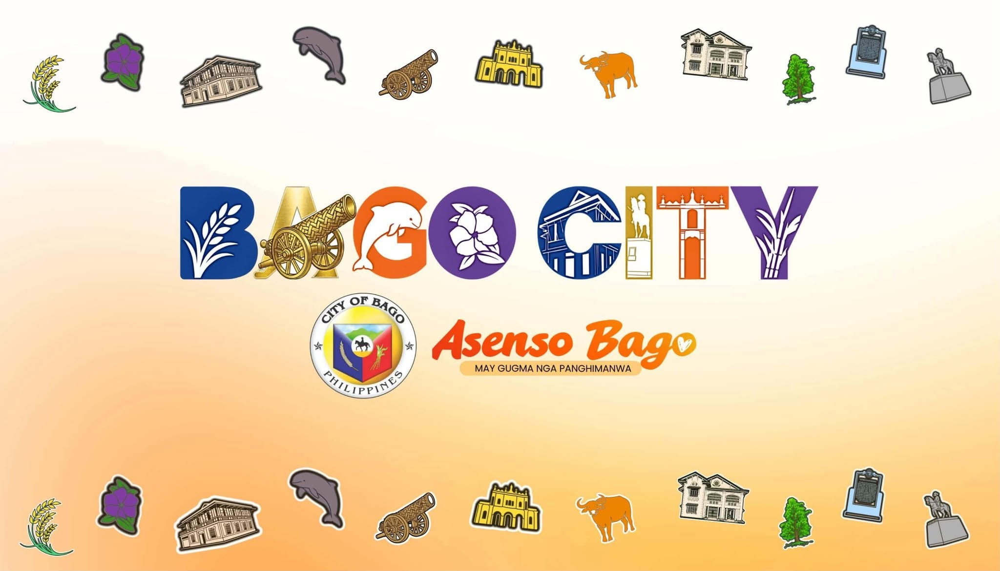
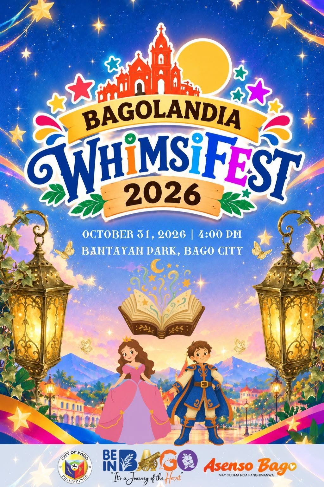
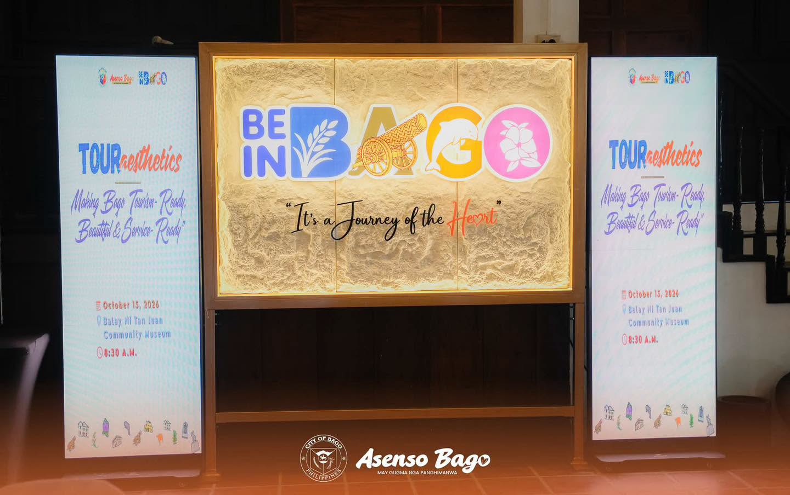
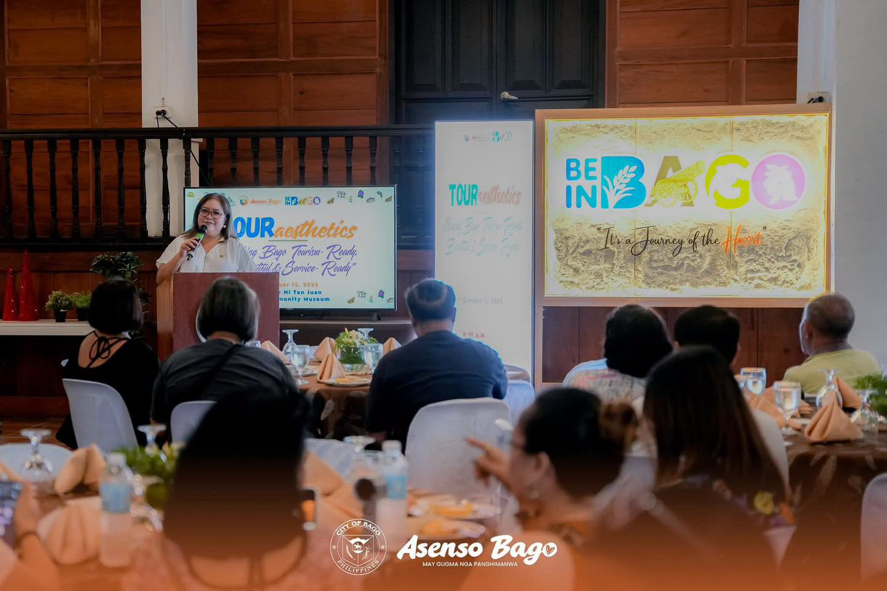
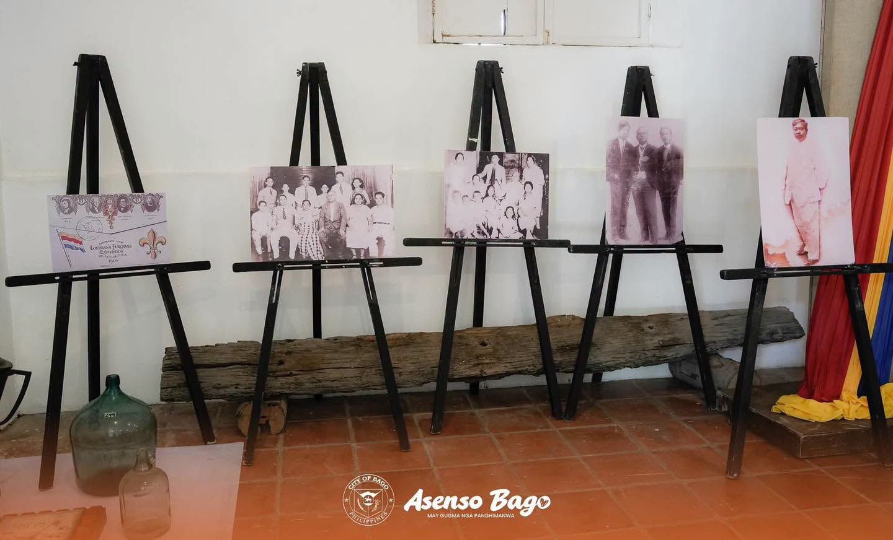
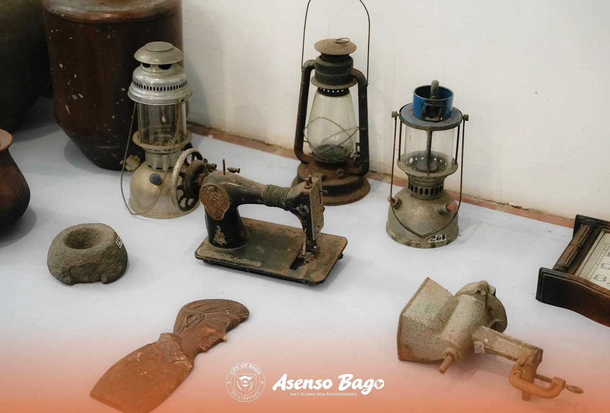
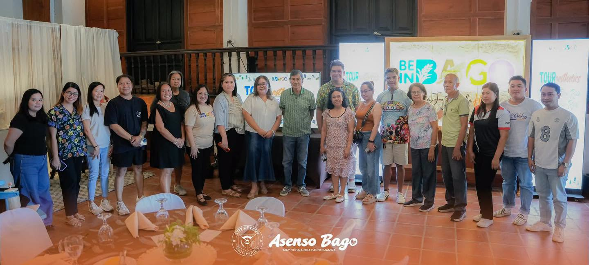

Shopping & Culture
Weekend Market
Experience the vibrant heart of Bago City where locals gather every weekend to showcase fresh produce, local crafts, and authentic street food. A true celebration of community and culture.

Discover
Nestled in the heart of Negros Occidental, Bago City is where natural beauty meets warm Filipino hospitality. Known for its rich agricultural heritage, vibrant community spirit, and authentic cultural experiences, Bago invites you to slow down, connect with nature, and discover what makes this city truly special.
From bustling weekend markets showcasing local bounty to scenic landscapes that inspire tranquility, every moment in Bago is an invitation to experience genuine Filipino life—where every smile tells a story, every meal is shared with warmth, and every visit becomes a cherished memory.
Explore
Discover the places that make Bago City a destination worth visiting. From vibrant markets to cultural landmarks, each destination offers a unique window into the heart of Bagonhon life.

Experience
Whether you seek adventure, cultural immersion, culinary delights, or simply a warm community welcome, Bago City offers experiences that create lasting memories.
Explore lush landscapes, scenic trails, and natural wonders that showcase the beauty of Negros Occidental.
Immerse yourself in the rich history, traditions, and cultural heritage that define Bago City's unique identity.
Savor authentic Bagonhon cuisine, local delicacies, and the agricultural bounty of our fertile lands.
Join vibrant celebrations, cultural festivals, and community events that showcase our warmth and spirit.
Meet the people of Bago City, hear their stories, and experience genuine Filipino hospitality.
Discover local artisans, traditional crafts, and contemporary arts that reflect our creative spirit.
Gallery
Every image tells a story. Explore visual moments that capture the essence of Bago City—its people, places, and the spirit that makes it unforgettable.




